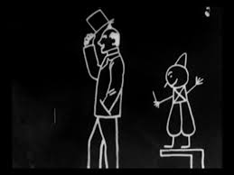

¿Que son?
Es una categoría dentro de las obras de animación que se refiere
a aquellas secuencias visuales realizadas en dos dimensiones. Se
consiguen dibujando secuencialmente cada fotograma que componen a
las obras, generando una secuencia y representación de imágenes en
movimiento. Es la técnica de animación más antigua y conocida,
denominada como animación 2D, animación tradicional o animación
clásica. Se diferencia de la animación en 3D principalmente por
la forma de producción.
Los dibujos animados, encajados dentro de la animación clásica,
recogerían la animación total (cuadro a cuadro), por fases y por transparencias,
aunque popularmente el término también recoge técnicas de animación de stopmotion
y similares. El primer largometraje de animación, titulado El apóstol, de 1917, se
le atribuye al caricaturista argentino Quirino Cristiani, y fue realizado mediante
la técnica de recortes, encajando más en el stopmotion.
Historia
La historia de la animación comienza como tal a finales del siglo XIX. En aquellos tiempos todavía no existía el cine, ni por supuesto las grabadoras o los proyectores. Los aparatos que permitieron ver por primera vez imágenes en movimiento eran artilugios mecánicos que funcionaba a partir de principios ópticos.
El interés por contar historias a través de las imágenes se remonta a la Prehistoria. Es el caso de las escenas de caza que muestran las pinturas rupestres, los retablos románicos o los frescos egipcios, entre muchos otros. Sin embargo, la ausencia de medios físicos que permitieran conseguir “imágenes en movimiento” impidió que se pudiesen generar hasta mediados del siglo XIX.
Si hay un hito en la historia de la animación, sin duda es el estreno en 1937 de Blancanieves y los Siete Enanitos, la famosísima película de los Estudios Disney. Pero tan importantes como ella son los cortometrajes que los pioneros de la animación crearon a finales del siglo XIX y principios de XX. Por ejemplo, Fantasmagorie, el corto que Émile Cohl realizó en 1907 a partir de 700 ilustraciones. El sistema de discos iluminados crea una curiosa sensación de “negativo”; pero el movimiento de las imágenes está muy conseguido.
